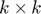

Script for testing simple pattern recognition
Given , we generate a set of binary patterns on a grid of  composed of vertical, horizontal, diagonal lines and crosses. We then make the model learn (option C and option D) with this stimuli and test its capacity of prediction. We graph the mean over 10 iterations for different values of
Option D:
Option C:
Oct. 27, 2019, ver 0.1.
k = 5,7,9,11,13
We see the results with option D are much better than with optionC.
optionD: means: [0.9167,0.9095,0.9037,0.8439,0.7513] and stdev: [0.0324,0.0313,0.0312,0.0248,0.0495]
optionC: means: [0.5667,0.4405,0.3685,0.3303,0.3167] and stdev: [0.0385,0.0617,0.0614,0.0494,0.0476]
Not only the means in optionD are way higher but its standard deviation are lower. In both cases we can see a big decrease in accuracy when k increases
Contents
Compute resluts
clear close all path(path,'MatFunc') kvec = [5,7,9,11,13]; % k values tested meansC = []; stdevC = []; meansD = []; stdevD = []; for k = kvec k [p,s] = generatePatterns(k); % generate patterns % Add crosses hk = ceil(k/2); cross1 = p(:,:,hk) + p(:,:,hk+k); cross1(hk,hk) = 1; cross1 = cross1/norm(cross1); cross2 = p(:,:,2*k+1) + p(:,:,2*k+2); cross2(hk,hk) = 1; cross2 = cross2/norm(cross2); p(:,:,6*k-1) = cross1; p(:,:,6*k) = cross2; s = [s cross1(:) cross2(:)]; it = 10; % number of iterations resultsC = zeros(1,it); resultsD = zeros(1,it); for i = 1:it rng(i); % use different initial values [acC,acD] = accuracyPatterns(k,s); resultsC(i) = acC; resultsD(i) = acD; end meansC = [meansC, mean(resultsC)]; % store the mean stdevC = [stdevC, std(resultsC)]; % store the standard deviation meansD = [meansD, mean(resultsD)]; stdevD = [stdevD, std(resultsD)]; end
k =
5
k =
7
k =
9
k =
11
k =
13
Plot results
figure errorbar(kvec,meansC,stdevC); title('Accuracy of option C'); xlabel('k') ylabel('accuracy') xlim([1 16]) xticks(1:2:16) ylim([0 1]) figure errorbar(kvec,meansD,stdevD); title('Accuracy of option D'); xlabel('k') ylabel('accuracy') xlim([1 16]) xticks(1:2:16) ylim([0 1]) meansC stdevC meansD stdevD
meansC =
0.5667 0.4405 0.3685 0.3303 0.3167
stdevC =
0.0385 0.0617 0.0614 0.0494 0.0476
meansD =
0.9167 0.9095 0.9037 0.8439 0.7513
stdevD =
0.0324 0.0313 0.0312 0.0248 0.0495